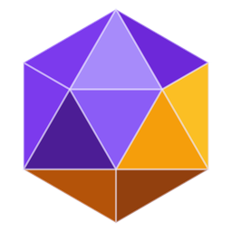

Icozinho
Sessões
Conversa
📌
♪
⚙
▴
Conversa nova
Enviar
Icozinho
Pet solto na barra de tarefas
Desligado, ele fica preso aqui na doca.
Sons
Quando o Claude precisa de você ou termina.
Lugar da doca
Ela fica escondida na borda; encoste o mouse para ela sair.
Esquerda
Topo
Direita
Iniciar com o Windows
Claude Code
…